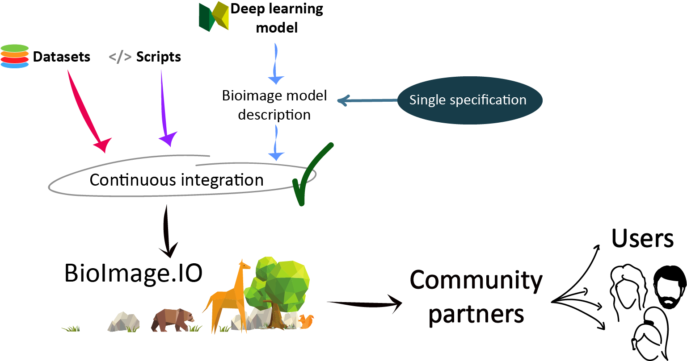
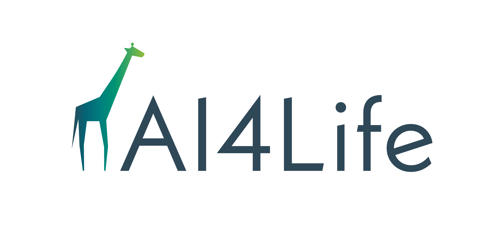
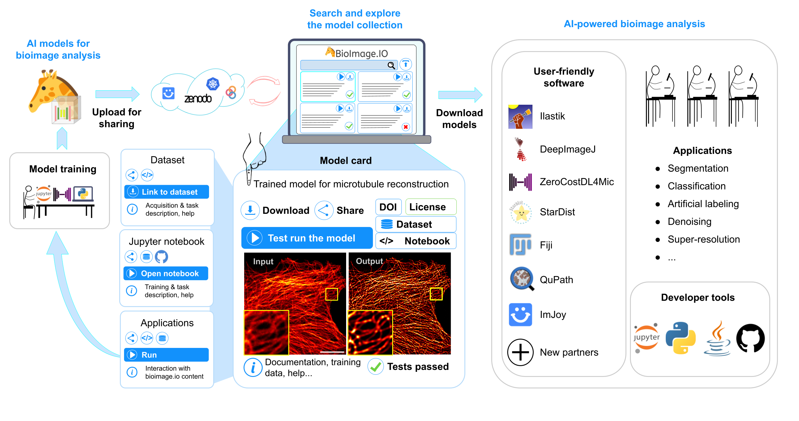

BioImage Model Zoo: Advanced models in one-click
Contributors
Questions
What is BioImage Model Zoo?
Who participates in the BioImage Model Zoo?
Who can participate in the BioImage Model Zoo?
Objectives
Share what BioImage Model Zoo is.
Provide a general view of what can be done with BioImage Model Zoo.
Explain who can and should contribute to the BioImage Model Zoo.
BioImage Model Zoo
- Integrated with Fiji, ilastik, ImJoy and more
- Try model instantly with BioEngine
- Contribute your models via bioimage.io or Zenodo
- Link models to datasets and applications Explore the zoo!
Speaker Notes The BioImage Model Zoo is integrated with different softwares such as Fiji, ilastik, ImJoy and more. You can try the models instantly with BioEngine and contribute your models via Github. You can also link models to datasets and applications. —
Introduction
The BioImage Model Zoo is destined for two different end users:
- Developers with trained model
- Researchers willing to use those trained models

Speaker Notes The BioImage Model Zoo is a community-driven AI model repository. The aim is to facilitate the adoption of AI methods among the bioimaging community by providing easy access to pretrained AI models. By establishing a common Model Resource Description File Specification, the model zoo serves as a distribution point for deep learning models trained to perform bioimage analysis tasks. —
Who is funding it?
 AI models and methods 4 the Life Sciences
Speaker Notes Currently, the bioimage io is being funded by the AI4Life project, research services and infrastructure to support life scientists in the adoption of machine learning solutions that improve the utility and interpretability of image data – the key to future biological and biomedical research. —
Who is currently contributing?
Community partners such as ilastik, ImJoy, Fiji, deepImageJ, ZeroCostDL4Mic, QuPath, Icy and more!
Speaker Notes Several founding partners including ilastik, ImJoy, Fiji, deepImageJ, ZeroCostDL4Mic, QuPath and Icy are involved in the creation of the model zoo and we welcome more community partners to join the efforts. —
Only these ones?
Welcome! We encourage you to submit or run models, use our tools or even become a Community Partner!
Speaker Notes The model zoo is open for contributions from the community partners and external individuals. You are welcome to submit models to the model zoo. We will do our best to ensure you have a smooth experience contributing your work which will of course remain in your IP with all necessary attributions. —
How does it work?

Speaker Notes The BioImage Model Zoo is a repository with many trained models ready to use on many different AI-powered bioimage analysis tools. You can either upload your trained model so it is shared among the community or use that model through any of our user-friendly softwares between the community partners. All models will appear on their own model card. In each card several information about how to download it, run it, who made it and more can be found. Finally, there are many different applications for that models such as segmentation, classification, artificial labeling, denoising, super-resolution and more. —
Why should I be using it?
- It’s open source!
- Many different user-friendly software to run the models.
- People will be using your models and citing you!
Speaker Notes There are many reasons for which you should be using the bioimage.io to run and upload your models. One of them is that we are an open-source project and we believe in sharing. And then, if you are willing to run deep-learning models, you will be able to do it in many different user-friendly softwares. Or, if you have a model and you want to upload it, you can share it among many people that will use it and cite you.